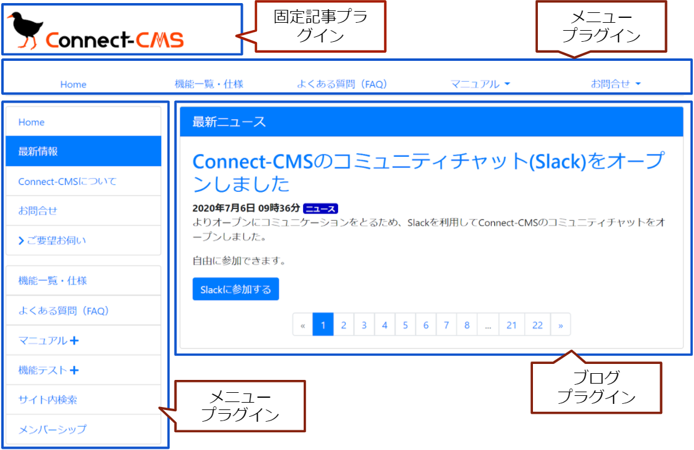
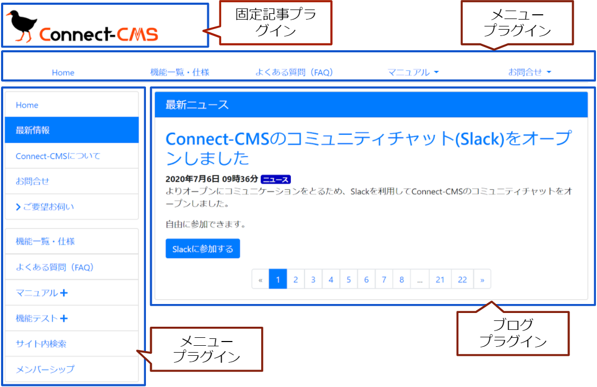

ページ - フレームとプラグイン
Connect-CMS のフレームとプラグインの関係について説明します。
以下にフレームとプラグインの例を示します。
Connect-CMS では、フレームにプラグインが紐づいています。
- 以下の図の赤の枠がプラグインです。
- 以下の図の青の枠がフレームです。
【フレームとプラグイン】

Connect-CMS のフレームとプラグインの関係について説明します。
以下にフレームとプラグインの例を示します。
Connect-CMS では、フレームにプラグインが紐づいています。
【フレームとプラグイン】
